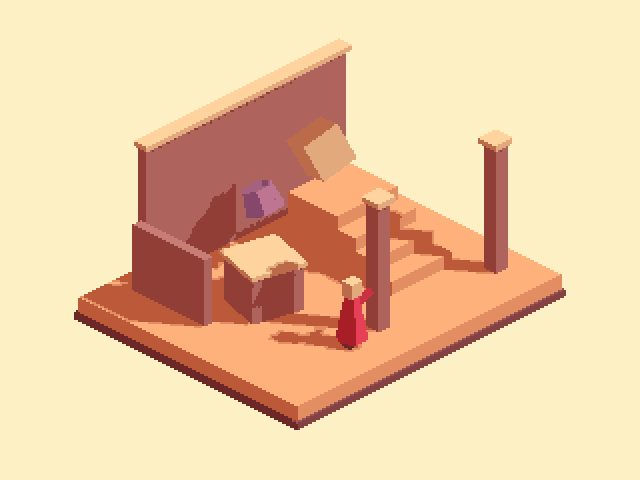
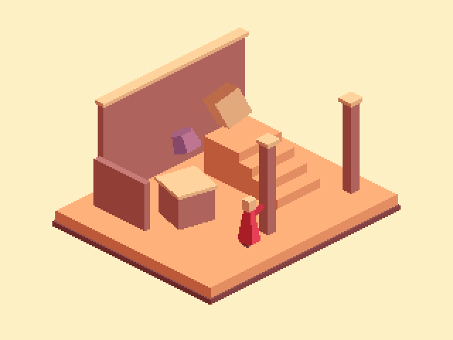

Tracefolio REPORTS & ISSUES
Tracefolio REPORTS & ISSUES아이소매트릭 재학습 — 투영·면 음영·투사 그림자·자발광 구분
완료현재 그림자 위치는 실제 광원·가림에 반응합니다. 다만 고정 자발광이 어두운 곳도 밝히는 것을 검증했습니다. 투영과 조명·색 보정을 구분합니다.
작업 결과
아이소매트릭 투영과 면 음영·투사 그림자·후처리의 역할을 공식 Unity 6 문서, 소스와 실제 GPU 출력으로 구분했습니다. 그림자를 상수 위치에 그린 것은 아니지만, 고정 자발광과 틴트로 외관을 보정한 사실을 확인했습니다. 제품 에셋·설정은 이번 조사에서 변경하지 않았습니다.
변경 내용
적용 내용
제품 외관을 추가로 수정하지 않았습니다. 개발 전용 검증에서 장면·재질·프리셋을 미리보기 사본으로 복제하고 광원 회전, 그림자 끄기, 투사 끄기, 자발광 제거를 각각 한 조건씩 비교했습니다. 픽셀 색상 변화를 읽기 위해 팔레트·윤곽선 후처리는 진단 사본에서만 껐습니다.

원래 조명·그림자 계산. 후처리를 제외한 진단 출력입니다.

같은 장면에서 그림자만 끔. 면의 방향에 따른 명암은 남고 투사 그림자가 없어집니다.
같은 장면에서 고정 자발광만 제거한 진단 출력입니다. 제품 설정에 적용한 결과가 아닙니다.
검증
- 아이소매트릭은 직교 투영과 시점의 문제이며 밝고 어두운 영역을 결정하는 조명 계산과 구분해야 합니다. Unity 6 카메라 문서
- 면 음영은 법선과 광원 방향의 내적, 투사 그림자는 가림에 따른 그림자 감쇠로 계산됩니다. 현재 셰이더에도 dot(normal,direction)과 UNITY_LIGHT_ATTENUATION/URP shadowAttenuation이 있습니다. Unity 6 실제 그림자 수신 예제
- 자발광은 조명이 어두워져도 표면을 밝게 보이게 하는 별도 항입니다. 현재 예제에는 기본색×0.18, 보라 소품×0.22와 고정 ShadowTint 값이 들어 있습니다. 이 값을 원리 검증보다 먼저 조절해 참고 색을 맞추려 한 것이 문제였습니다. 고정된 머티리얼 파라미터 자체와 고정된 그림자 위치는 같은 의미가 아닙니다. Unity 6 Emission 문서
- 실제 GPU 비교: 광원 회전 65,604픽셀 변화, 그림자 끄기 13,284픽셀 변화, 물체 그림자 투사 끄기도 13,284픽셀 변화. 실제 가림이 그림자 위치에 반영됨을 확인했습니다.
- 자발광 제거 시 표면 99,576픽셀이 변했습니다. 광원만 끄면 해당 영역의 평균 RGB 코드값은 약 30.16/255로 남았고, 자발광도 끄면 0이었습니다. 이는 선형 휘도나 에너지 비율이 아닌 8비트 RGB 평균입니다. 실행 수치
- 활성 씬·더티·선택·원래 루트를 보존하고 모든 작업 preview와 복제 재질을 정리했습니다. 제품 에셋·프로젝트 설정 저장이나 GUI 포커스 변경은 하지 않았습니다.
- 교훈 검토: 기존 전역의 “원인을 실제 실행으로 검증” 규칙에 해당합니다. 색상 상수·자발광 보정과 광원/가림에 따른 동작 검증을 구분하며, 이번 조사에서 전역 지침을 새로 추가하지 않았습니다.
남은 사항
이 보고서의 완료는 원리 조사와 현재 동작 검증에 한정됩니다. 원래 제품의 실제 GUI/입력 검증은 사용자 요청으로 여전히 보류입니다. 참고 이미지의 원본 셰이더·조명 설정은 제공되지 않아 그 내부 구현을 확인했다고 주장하지 않습니다. 다음 외관 수정은 조명·가림 반응을 유지한 상태에서 판단해야 하며, 이번 조사 결과를 제품 수정 완료로 보고하지 않습니다.
작업 시간
- 제안 시간: 5~10분
- 실제로 완료된 시간: 조사 시작 2026-11-05 18:02:48 KST. 실제 GPU 분리 검증 완료 2026-11-05 18:43:00 KST(40분12초). 공개 기록 확인은 별도입니다. 최초 5~10분 예상을 초과했습니다.
- XERJ: 미사용 — PixelCamera는 기존 인덱스 범위 밖이며 현재 소스와 공식 문서·실제 GPU 비교로 검증했습니다.